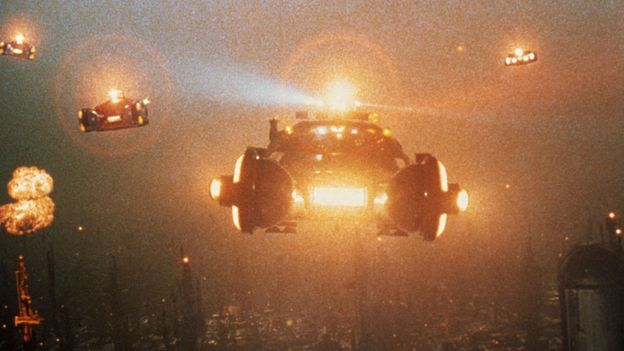

1. The Flawless Direction
Blade Runner was directed by Ridley Scott. This was Scott's third feature film, following 1977's The Duellists and 1979's Alien. Directing Blade Runner was not easy for Scott, as it was an uphill battle from the script stages to production to the end of the editing process. Scott argued with producers over budgetary conerns, crew over working conditions, writers over screenplay changes, and with cast members over character identities. In the end, it was all worth it, as Blade Runner is today considered by many to be Scott's best film and one of the best and most influential science fiction films of all time.
2. The Painstakingly Detailed Designs

Blade Runner is perhaps best known for its meticulous attention to detail. Though all design work was overseen by director Ridley Scott with a strict eye, there were a number of talented artists who were responsible for bringing the world of Blade Runner to life. Industrial designer Syd Mead was reponsible for the sleek futuristic look of the film. Michael Kaplan and Charles Knode were reponsible for the stylish costumes, providing them with a look that would become hugely influential and would later be defined as "steam punk." David L. Snyder's extraordinarily detailed art direction provided the film with its characteristic atmosphere. Though Ridley Scott was responsible for the overall vision of the film, there were countless other talents that helped make Blade Runner the classic that it is today.
3. The Perfect Performances
In terms of perfromances, Blade Runner doesn't have a single weak link. Every actor inhabits the wolrd of the film and their character with the deceptive appearance of ease. Harrison Ford, in the lead, provides the film with his low-key integrity. Sean Young, in one of her first screen performances, displays a vulnerability and an innocence that makes her one of the film's most sympathetic characters. Daryl Hannah, also in one of her earliest performaces, makes her character sympathetic yet, at times, shockingly lethal. Rutger Hauer truly steals the show, however, as an android who might be more human than his creators. Hauer's performance is fearless, inventive, and endlessly watchable.
4. The Beautiful Score
Vangelis has supplied a number of iconic scores to movies over the years (Chariots of Fire is one of his best-known). His work on Blade Runner is no exception; in fact, it's perhaps his single greatest accomplishment. At the very least, it's up there. Vangelis' score for Blade Runner perfectly caputures the otherworldly wonder of the film's atmosphere, visuals, and world. Vangelis' score is as grand as the scale of the film itself. The pure magic of Blade Runner's visuals wouldn't have the same effect if they weren't accompanied by the one-of-a-kind soundscape that Vangelis brought to the world of Blade Runner.
5. The Groundbreaking Visual Effects
Even by today's standards, the visual effects of Blade Runner still hold up quite nicely. Due to his commitment to direct the film Brainscan, special effects maestro Douglas Trumbull (2001, Close Encounters of the Third Kind) was only able to partially oversee some of the major photographic effects in Blade Runner. Luckily, a number of talented professionals were able to fully carry out the visual effects work in his place. Richard Yuricich, Ian Hunter, Robert Hall, and Evans Wetmore are just a few of the names who completed the tasks that Trumbull was too busy to do on his own. It was very much a team effort that brought the film's unreal cityscape, flying cars, and futuristic gadgets to life. Even at forty years old, Blade Runner's visual effects hold up as strongly today as they did when the film was first released in 1982.
6. The Goregous Cinematography
From its opening shot of an eye overlooking a nighmarishly industrial cityscape to its many smoke-filtered indoor shots to its stunning depictions of crowded and futuristic downtown urban areas, Blade Runner is full of countless iconic images. While director Ridley Scott deserves the credit he has received for conceiving these images, Blade Runner's director of photography, Jordan Cronenweth, has not been dealt the same fair hand of recogntion. The impeccably lit, futuristic noir style that was carried out by Cronenweth is as much his doing as it is Scott's. Blade Runner was not an easy shoot for Cronenweth, as he was suffering from Parkinson's Disease throughout it's duration, a matter made worse by the fact that he had been improperly medicated by his doctor at the time. Though Cronenweth passed away at the relatively early age of 61 in 1996, his work will continue to speak for itself as it continues to live on long after him.
7. The Steady Pacing
Regardless of how great it is, Blade Runner is not a fast-paced movie. It's not supposed to be. Nor is it slow-paced. Blade Runner is an evenly paced film that moves forward with steady determination. It's wholly engrossing, moving at a speed that is almost dream-like, giving the viewer time to settle into its world and amazing visuals. Editor Terry Rawlings, a longtime collaborator of director Ridley Scott, keeps the storytelling and the pacing so smooth that the audience doesn't stop to think about it or notice it. Like many of its more successful components, Blade Runner's editing is so subtle that it's almost invisible.
8. The Direct and Poetic Screenplay
Blade Runner essentially had three writers. Phillip K. Dick first wrote the source material, Do Androids Dream of Electric Sheep? Hampton Fancher then optioned the material in the 70s and spent a number of years developing it until Ridley Scott came on board in the early 80s and further helped to develop it. Though Fancher and Scott had a mutually respectful relationship, Fancher was eventually replaced towards the end of the scriptwriting phase by David Webb Peoples. The final draft of the script was the result of Scott essentially cutting and pasting together the best of both Fancher's and Peoples' work. The final result had a direct and rather simple storyline that was set in a highly complex world. Since the story wasn't particularly hard to follow, it allowed audiences to focus on Blade Runner's more complicated elements, such as its themes of what it means to be human, its intricate world, and it's eye-grabbing designs.
9. The Lingering Ambiguity
Though the 1982 theatrical cut wasn't quite as ambiguous as the 1992 Director's Cut or the 2007 Final Cut, it still left room to wonder who, exactly, its main character, the android-hunting detective Rick Deckard, actually was. According to star Harrison Ford, he's simply a human being doing his job with whom the audience can easily relate. According to director Ridley Scott, Deckard is an andoid, just like the creations he hunts and kills for a living, who is wholly unaware of who and what he actually is. Both scenarios are compelling, and it's easy to understand why both of them are met with such resistance from fans. The film's success, fortunately, doesn't rely on which case is correct; it works either way. Regardless of whether Deckard is an android or human, Blade Runner still works on numerous and complex levels. Simply put, it's whatever movie we discover it to be for ourselves--and that can beautifully change with each new viewing.
10. The Influence on Modern Popular Culture
Blade Runner's influence can be found in countless comics, commercials, music videos, video games, and, of course, movies. It is the Citizen Kane of its day--a movie so influential that modern filmmaking wouldn't come close to resembling what it is today without it. Such classics as Brazil, Akira, Seven, The Matrix, Gattaca, and Dak City (just to name a few) owe a significant debt to Blade Runner. It's not just a movie, it's a milestone that predicted and influenced many aspects of modern-day popular culture. There hasn't been a movie of such craft, such meticulous detail, and such audacious ambition since.